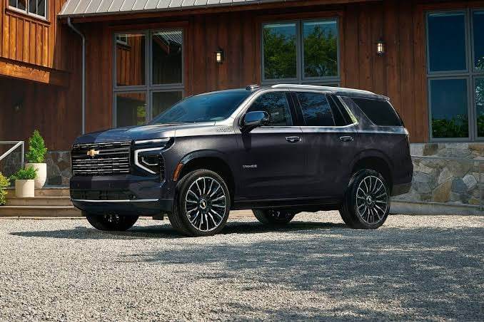
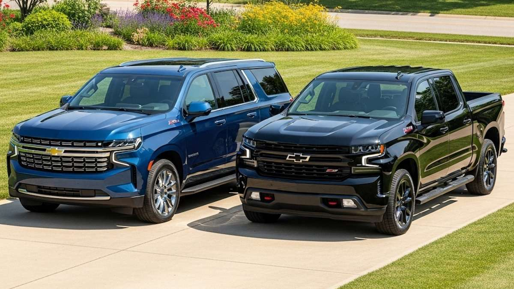
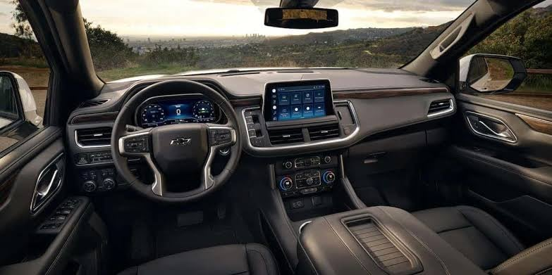
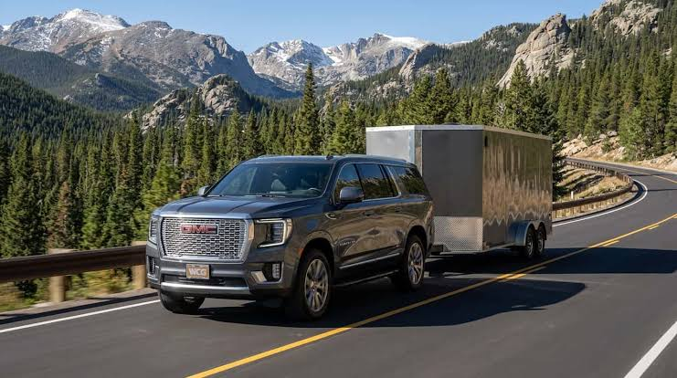
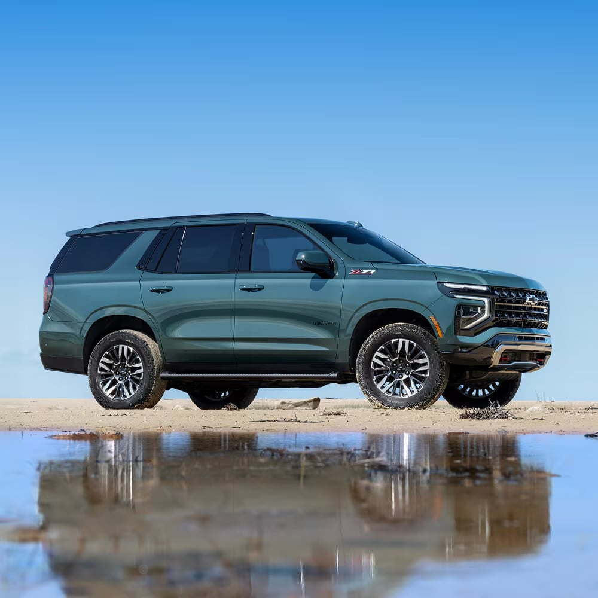
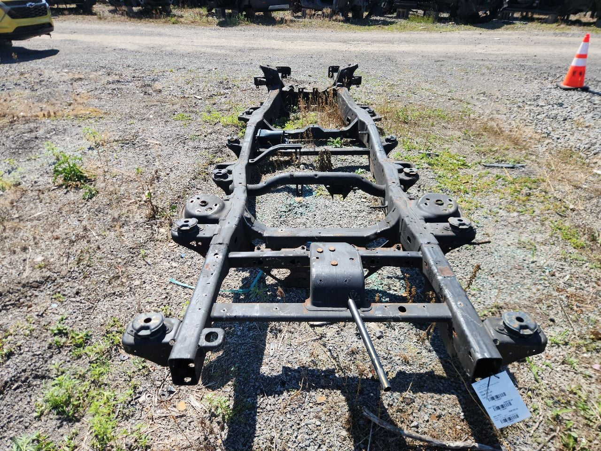
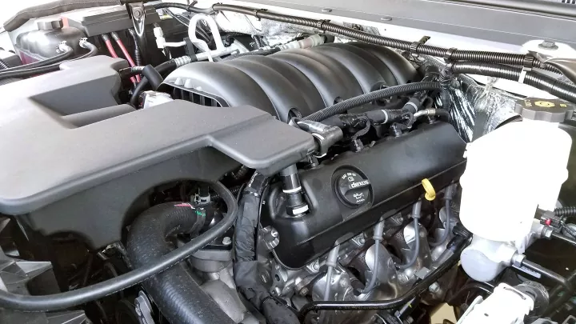
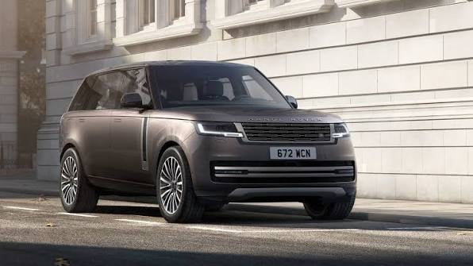
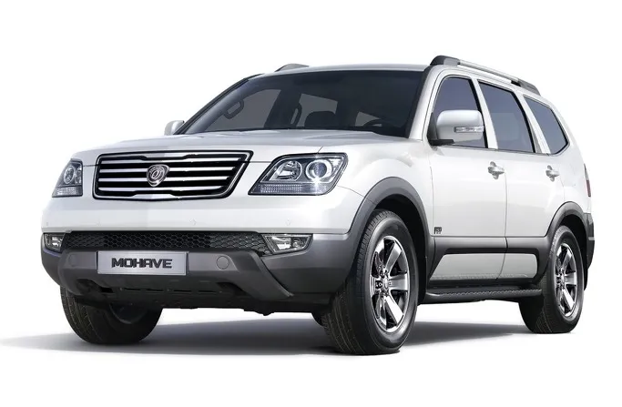
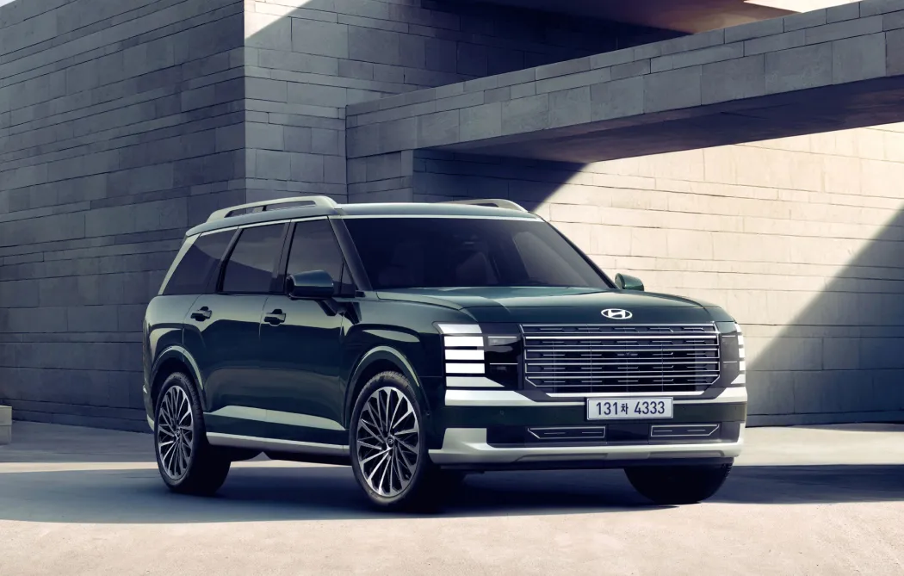

'미국식 정통 SUV 가 진짜고 국산 SUV 는 가짜다'
자동차 유튜브나 블로그 보면 미국차 리뷰할때마다
심심치 않게 나오는 표현인데

얘들이 하는 소리 들어보면
미국차는 트럭을 먼저 만들고 그걸 기반으로 SUV 를 만들기 때문에
우리나라 처럼 풍선근육 차가 아니라는거임

대체 어디서 그런 말이 나온건지 모르겠지만
이건 그냥 픽업 트럭이 많이 팔리는 미국 특성상
프레임 공유로 원가를 대폭 낮추는 비용 절감일 뿐임

물론 당연히 장점도 있긴 함
견인력이 트럭과 동일해서 2톤 이상 무게가 나가는
아메리칸 카라반 같은걸 끌고 대륙을 건널 수 있고

기반으로 만들어진 트럭과 비슷한 수준의
오프로드 능력정도가 장점인데
문제는 이걸 위해서 희생해야하는건

당연히 트럭 프레임을 공유함에서 오는
트럭 그 자체의 승차감, 차체 무게때문에 롤링도 더 심하고
이건 진짜 과장 좀 섞어서 시내버스 승차감 나옴

거대한 강철프레임을 끌고 다니기 위한
웅장한 사이즈의 엔진,
사실상 미국산 슈퍼카라고 불리는 콜벳보다
연비가 더 악독하게 나옴
애초에 한국처럼 중앙정부에서 전국 동시 제설이 가능하고
도로 환경도 극도로 좋은 나라에서 한국 SUV를
정통성이 없다고 까는 유튜버는 그냥 겉멋이라고 봐야함

애초에 미국만 봐도 어바인이나 샌디에고처럼
도로환경 좋은곳 부자들은 대부분 레인지로버나 포르쉐 끌고 다닌다 ㅋㅋㅋ
타호나 유콘같은 SUV 는 콜로라도나 텍사스같은곳에서 많이 보이고

실제로 국내 소비자들이 한때 미국산 '정통 SUV' 노래를 부르면서
바디온 프레임이라는 단어에 꽂혀있던 시절
기아에서 모하비 만들어줬다가 승차감으로 대차게 까이고
단종된것만 봐도 이건 우리에게 필요한 물건이 아님

역시나 좀 못생기긴 했지만
그래도 역할에는 충실한 우리 국산 SUV 를
오늘만큼은 다들 사랑해 주자고
그냥 국내 판매량이 모든걸 증명하지 않나
미국형 SUV가 그렇게 좋았으면 기를 쓰고 수입해서 잘팔았겠지